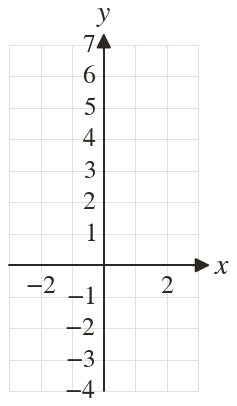
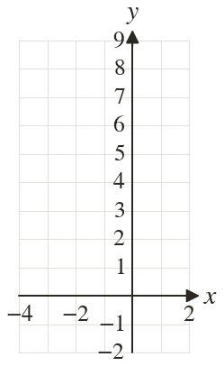
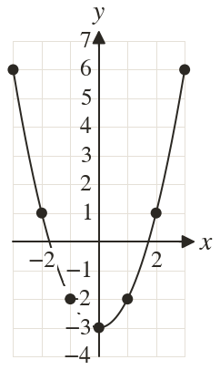
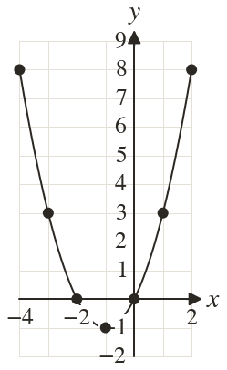

Westonbirt Maths · Simultaneous Equations and Graphs
Plotting Non-Linear Graphs
Name: ______________________ Date: ____________
1
Complete a table of values for for from to then draw the graph.
2
Complete a table of values for for from to then draw the graph.
3
For find when and when
4
Describe the shape of
Where is its lowest point, and what is its line of symmetry?
Where is its lowest point, and what is its line of symmetry?
5
Ella joins her plotted points for a quadratic with straight lines. What should she do instead?
Ext
Use your graph of to solve



